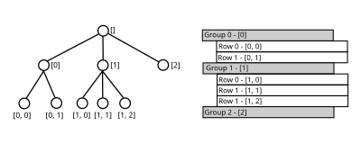
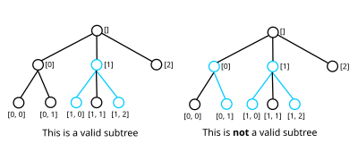

Job Tree View#
The JobTreeView component provides an MVP style view interface for a hierarchical table
with a spreadsheet-like appearance for configuring and indicating the status of multiple (batch)
reduction jobs. It is currently used to implement the tree component of the Batch Widget.
It is written in C++ and exposed to python through SIP leading to similar APIs as shown by the examples below.
# Mantid Repository : https://github.com/mantidproject/mantid
#
# Copyright © 2018 ISIS Rutherford Appleton Laboratory UKRI,
# NScD Oak Ridge National Laboratory, European Spallation Source,
# Institut Laue - Langevin & CSNS, Institute of High Energy Physics, CAS
# SPDX - License - Identifier: GPL - 3.0 +
from mantidqtpython import MantidQt
# Inside the parent view
def setup(self):
self.table = MantidQt.MantidWidgets.Batch.JobTreeView(
["Column 1", "Column 2"], # The table column headings
cell(""), # The default style and content for new 'empty' cells.
self, # The parent QObject.
)
self.table_signals = MantidQt.MantidWidgets.Batch.JobTreeViewSignalAdapter(self.table, self)
# The signal adapter subscribes to events from the table
# and emits signals whenever it is notified.
self.table.appendChildRowOf(row([]), [cell("Value for Column A"), cell("Value for Column B")])
def cell(text):
return MantidQt.MantidWidgets.Batch.Cell(text)
def row(path):
return MantidQt.MantidWidgets.Batch.RowLocation(path)
// Mantid Repository : https://github.com/mantidproject/mantid
//
// Copyright © 2018 ISIS Rutherford Appleton Laboratory UKRI,
// NScD Oak Ridge National Laboratory, European Spallation Source,
// Institut Laue - Langevin & CSNS, Institute of High Energy Physics, CAS
// SPDX - License - Identifier: GPL - 3.0 +
#include "MantidQtWidgets/Common/Batch/JobTreeView.h"
using namespace MantidWidgets::Common::Batch;
// Inside the parent view constructor
m_treeView = new JobTreeView({"Heading 1", "Heading 2"}, // The table column headings.
Cell(""), // The default style and content for the new 'empty' cells.
this // The parent QObject
);
m_treeViewSignals = // JobTreeViewSignalAdapter is also available from C++
// Constructing a signal adapter with the view implicitly calls subscribe.
new JobTreeViewSignalAdapter(*m_treeView, this);
m_treeView->appendChildRowOf(RowLocation(), {Cell("Value for Column A"), Cell("Value for Column B")})
API Concepts#
Row Location#
A row location is the notion of an individual row’s position within the table. Since the table is hierarchical, unlike a traditional spreadsheet, the table is more like a tree of rows where all non-leaf nodes can have any number of children.
In practice some interfaces such as Reflectometry are likely to want to constrain the number of children or depth of the tree, the batch widget has mechanisms for performing this.
Currently a row location is represented as a path from the root node to the row node in question,
this is actualised in the RowLocation class which contains an ordered list of integers where
each element represents the index of the next node in the path relative to it’s predecessor in the
path. An example table and corresponding tree structure are illustrated in the diagram below
(complete with their paths).
{kind=link}

Equality over RowLocation objects is based on the equality of their paths. The other relational
operators have a definition based on a lexicographical comparison such that sorting a range of
RowLocations puts them in the same order as they would appear in the table. This is
demonstrated by the code below.
auto items = std::vector<RowLocation>({
RowLocation({2}),
RowLocation({0}),
RowLocation({1, 1}),
RowLocation({1})
});
std::sort(items.begin(), items.end());
auto expectedItems = std::vector<RowLocation>({
RowLocation({0}),
RowLocation({1}),
RowLocation({1, 1}),
RowLocation({2})
});
assert(expectedItems == items);
Dealing With Cells#
Each row in the table can have 0-N cells. When interacting with the JobTreeView we
sometimes need to be able to address and change the properties of an individual cell. To do this
we use both a RowLocation and a column index.
Cells#
In order to retrieve the view properties for one or more specific cells, the methods cellAt
and cellsAt can be used to retrieve Cell objects for the cell at a row and column
index or all the cells for a particular row respectively.
The Cell class contains the per-cell view properties (such as the text it contains) in a
view-implementation independent format.
These cell objects intentionally have no link back to the view they originated from, so mutating
them does not directly update the view. In order to update the cell or cells corresponding to a row,
the methods setCellAt or setCellsAt should be used. This process is illustrated in
the example code below.
# Mantid Repository : https://github.com/mantidproject/mantid
#
# Copyright © 2018 ISIS Rutherford Appleton Laboratory UKRI,
# NScD Oak Ridge National Laboratory, European Spallation Source,
# Institut Laue - Langevin & CSNS, Institute of High Energy Physics, CAS
# SPDX - License - Identifier: GPL - 3.0 +
from mantidqtpython import MantidQt
# Inside the parent view
def setup(self):
self.table = MantidQt.MantidWidgets.Batch.JobTreeView(["Column 1", "Column 2"], cell(""), self)
self.table_signals = MantidQt.MantidWidgets.Batch.JobTreeViewSignalAdapter(self.table, self)
self.table.appendChildRowOf(row([]), [cell("Value for Column A"), cell("Value for Column B")])
self.change_colour_to_red(location=row([0]), column_index=1)
def change_colour_to_red(self, location, column_index):
cell = self.table.cellAt(location, column_index)
cell.setBackgroundColor("#FF0000")
self.table.setCellAt(location, column_index, cell)
def cell(text):
return MantidQt.MantidWidgets.Batch.Cell(text)
def row(path):
return MantidQt.MantidWidgets.Batch.RowLocation(path)
Subtrees#
As previously illustrated the conceptual model for the API is a tree of tables. Initially, this model presents some challenges when you think about how to represent a user’s selection while preserving the tree structure. This is however necessary in order to support presenters which wish to have sensible behaviour for actions such as copy and paste.
A subtree in this context refers to a set of one or more nodes within the tree where if the set has a size greater than one, each node is directly connected to at least one other node in the set. An example of a set of nodes which meets this constraint and a set of nodes which do not are outlined in blue in the diagram below.
{kind=link}

The Subtree type used to represent this concept in the API is defined in the header
Row.h. Refer to the documentation for the component Extract Subtrees for more detail
on the internal representation of a subtree in this API.
Notification#
JobTreeViewSubscriber is the mechanism by which the JobTreeView communicates events such as
key presses to the presenter in an MVP setup.
// Mantid Repository : https://github.com/mantidproject/mantid
//
// Copyright © 2018 ISIS Rutherford Appleton Laboratory UKRI,
// NScD Oak Ridge National Laboratory, European Spallation Source,
// Institut Laue - Langevin & CSNS, Institute of High Energy Physics, CAS
// SPDX - License - Identifier: GPL - 3.0 +
#include "MantidQtWidgets/Common/Batch/JobTreeView.h"
using namespace MantidWidgets::Common::Batch;
class SimplePresenter : public JobTreeViewSubscriber {
public:
SimplePresenter(JobTreeView *view) : m_view(view) {
m_view->subscribe(this); // Since we aren't using signal adapter
// we must remember the call to subscribe.
}
void notifyCellChanged(RowLocation const &itemIndex, int column, std::string const &newValue) override {}
void notifyRowInserted(RowLocation const &newRowLocation) override {}
void notifyRemoveRowsRequested(std::vector<RowLocation> const &locationsOfRowsToRemove) override {}
void notifyCopyRowsRequested() override {}
void notifyPasteRowsRequested() override {}
void notifyFilterReset() override {}
private:
JobTreeView *m_view;
};
// Elsewhere - Inside initialization
m_treeView = new JobTreeView({"Heading 1", "Heading 2"}, // The table column headings.
Cell(""), // The default style and content for the new 'empty' cells.
this // The parent QObject
);
m_childPresenter = SimplePresenter(m_treeView);
This interface is also implemented by JobTreeViewSignalAdapter which makes it easy to use
signals and slots instead when writing a GUI from python.
Due to the interactive nature of some events (such as row insertion, cell modification and filter resets), notification does not happen until after said event has taken place and the view has already been updated. Therefore, if a presenter determines that said action is on-reflection invalid it will be required to call a method which updates the view and rolls back the action. This is illustrated in the example below.
# Mantid Repository : https://github.com/mantidproject/mantid
#
# Copyright © 2018 ISIS Rutherford Appleton Laboratory UKRI,
# NScD Oak Ridge National Laboratory, European Spallation Source,
# Institut Laue - Langevin & CSNS, Institute of High Energy Physics, CAS
# SPDX - License - Identifier: GPL - 3.0 +
from mantidqtpython import MantidQt
def empty_cell():
return MantidQt.MantidWidgets.Batch.Cell("")
# Inside the parent view
def setup(self):
self.table = MantidQt.MantidWidgets.Batch.JobTreeView(["Column 1", "Column 2"], empty_cell(), self)
self.table_signals = MantidQt.MantidWidgets.Batch.JobTreeViewSignalAdapter(self.table, self)
self.table_signals.rowInserted.connect(self.on_row_inserted)
# The rowInserted signal is fired every time a user inserts a row.
# It is NOT fired if we manually insert a row.
def on_row_inserted(self, rowLocation):
# If the depth is more than two then we can safely 'rollback' the insertion.
if rowLocation.depth() > 2:
self.table.removeRowAt(rowLocation)
Other events (those who’s notification method name ends with Requested) require the presenter
to update the view and/or model and so the notification happens before the view has been updated.
Warning
After creating a JobTreeView it is important to call the subscribe method passing in
the subscriber prior to calling any other methods, failure to do so may result in undefined behavior.
Filtering#
Is is possible to make the JobTreeView only show a subset of the nodes in the tree based on an arbitrary predicate over row locations. These can be translated to their corresponding node in the MVP model or their corresponding cells from the view.
The header RowPredicate.h defines the interface which must be implemented by implementations
of such predicates. The method filterRowsBy defined in JobTreeView can be used to set
the currently active filter as demonstrated by the code below.
# Mantid Repository : https://github.com/mantidproject/mantid
#
# Copyright © 2018 ISIS Rutherford Appleton Laboratory UKRI,
# NScD Oak Ridge National Laboratory, European Spallation Source,
# Institut Laue - Langevin & CSNS, Institute of High Energy Physics, CAS
# SPDX - License - Identifier: GPL - 3.0 +
from mantidqtpython import MantidQt
import re
class Predicate(MantidQt.MantidWidgets.Batch.RowPredicate):
def __init__(self, meetsCriteria):
super(MantidQt.MantidWidgets.Batch.RowPredicate, self).__init__()
self.meetsCriteria = meetsCriteria
def rowMeetsCriteria(self, location):
return bool(self.meetsCriteria(location))
def make_regex_filter(table, text, col=0):
try:
regex = re.compile(text)
return Predicate(lambda location: regex.match(table.cellAt(location, col).contentText()))
except re.error:
return Predicate(lambda location: True)
def row(path):
return MantidQt.MantidWidgets.Batch.RowLocation(path)
def empty_cell():
return cell("")
def cell(cell_text):
return MantidQt.MantidWidgets.Batch.Cell(cell_text)
def row_from_text(*cell_texts):
return [cell(cell_text) for cell_text in cell_texts]
# Inside the parent view
def setup(self):
self.table = MantidQt.MantidWidgets.Batch.JobTreeView(["Column 1"], empty_cell(), self)
self.table_signals = MantidQt.MantidWidgets.Batch.JobTreeViewSignalAdapter(self.table, self)
self.table.appendChildRowOf(row([]), [cell("DD")]) # DD
self.table.appendChildRowOf(row([0]), [cell("DC")]) # DC
self.table.appendChildRowOf(row([0]), [cell("A9")]) # A9
self.table.appendChildRowOf(row([]), [cell("B0")]) # B0
self.table.appendChildRowOf(row([]), [cell("C0")]) # C0
self.table.appendChildRowOf(row([2]), [cell("A1")]) # A1
self.table.filterRowsBy(make_regex_filter(self.table, "A[0-9]+", col=0))
# Applying this filter excludes B0 since neither itself not it's decendant's contents
# match the regex given.
The method resetFilter is used to unset the filter so that all items are shown again and
the hasFilter method is used to determine if the filter is currently set.
Some actions performed on the JobTreeView can trigger the filter to be reset automatically.
This necessitates the notifyFilterReset method in JobTreeViewSubscriber which is
called whenever the filter is reset, even when requested explicitly.